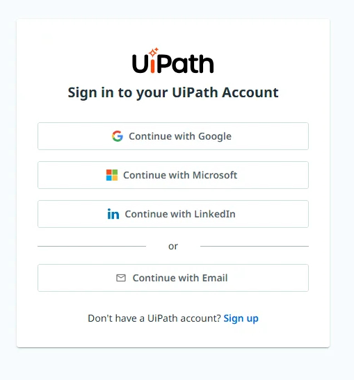
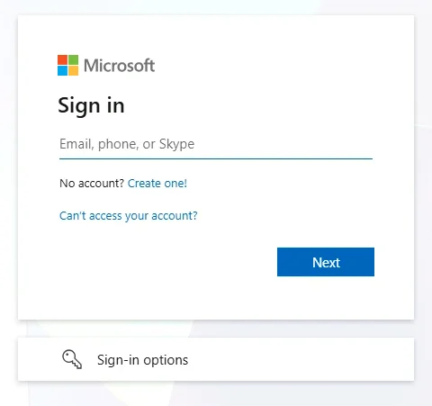

动手实践 · 第一步
🧰 环境准备¶
这是动手实践部分的第一件事：你的虚拟机、登录、租户和测试数据。从上到下依次完成。每一节都会先自行验证，然后你再继续。
我们一起完成
环境准备是课程的一部分：在介绍之后、动手实践开始时，讲师会带全场一起完成。如果某一步失败，请先举手，不要直接往下做。
培训环境
在 https://cloud.uipath.com/tpenlabs 登录，使用租户 AgenticTestingWorkshop。
🔑 1. 登录培训环境¶
从这里开始，请在虚拟机内操作。
- 在虚拟机中打开 Google Chrome，访问 https://cloud.uipath.com/tpenlabs。
-
选择 Continue with Microsoft。

-
使用工作坊详情中 Your Workshop Account 区域里的用户名和密码登录，不要用你自己的账号。输入用户名，选择 Next，再输入密码并选择 Sign in。

✅ 2. 确认租户¶
登录后，打开 Studio Web。在右上角确认租户选择器显示的是 AgenticTestingWorkshop。如果显示的是其他租户，请先切换到 AgenticTestingWorkshop 再继续。
讲师检查清单：租户侧
讲师会在课程开始前准备好以下内容。学员无法自行修复：
- 为每位学员分配 App Test Developer 许可证。
- 一条允许 Autopilot 的 AI Trust Layer 策略。
- AgenticTesting 文件夹，并具有创建资产和运行测试集的权限。
- 该文件夹中有一个带 Testing 或 Production 运行时的机器人，并且有一个存储了凭据的机器人账号分配到该文件夹。没有凭据时，即使运行时显示 Connected 和 Available，测试集作业也会一直处于 Pending，原因为
RobotNoCredentials。 - 文件夹中有一个用于 Run autonomously 的 Windows 机器人：自主运行仅支持 Windows。
🔗 3. 将 Studio 连接到培训租户¶
Autopilot in Studio Desktop 作用于 Studio 当前登录的租户。让 Studio 登录到培训租户：
- 打开 Studio。如果你已登录到其他环境（例如
cloud.uipath.com），请先退出登录。 - 重新登录之前，把云端 URL 改为
https://cloud.uipath.com。在 UiPath Assistant 中，它位于 Preferences > Orchestrator Settings 下，名为 Service URL。 - 登录，然后选择组织 tpenlabs 和租户 AgenticTestingWorkshop。
- 确认 Studio 中可以使用 Autopilot 面板。如果不能，请先询问讲师再继续，因为动手实践部分就从它开始。
所有工具使用同一个环境
Studio、uip CLI 和你的浏览器都必须指向 https://cloud.uipath.com/tpenlabs。如果其中某一个仍在其他环境中，Autopilot 会把需求保存到你的编码智能体看不到的项目里。
🏦 4. 注册你的 UiBank 测试用户¶
测试用例会以已注册的 UiBank 用户身份登录。现在就创建你的用户，让测试有账号可用。
- 访问 uibank.uipath.com/register-account；如果无法打开，请访问备用地址。
- 填写表单：名、中间名和姓，性别，邮箱，用户名和密码。请使用一个你在其他地方都没用过的密码，因为 UiBank 是一个公开的演示网站。
-
注册后，在 uibank.uipath.com/login（或备用地址）登录，确认账号可以使用。
-
如果登录后 UiBank 显示 Important Notice 对话框，请选择 I agree to the Privacy Policy。用 ✕ 关闭它会让你处于未登录状态。请在自动化任何操作之前，现在就手动接受它。
如果 uibank.uipath.com 无法打开
请使用备用地址 purple-dune-0af054403.6.azurestaticapps.net。它提供相同的 UiBank 应用和相同的页面：在后面加上 /register-account 或 /login 即可。切换后，请确认你的用户可以在那里登录，如果不能，就重新注册。之后，凡是课程中写 uibank.uipath.com 的地方，包括测试用例中的目标 URL，都请改用备用地址。
测试不会在项目中存储你的密码，而是从 Orchestrator 的凭据资产中读取。请手动创建它：
- 在 Orchestrator 中打开
AgenticTesting文件夹，进入 Assets。 - 选择 Add > Credential，命名为
{YourName}_UiBankCredential。 - 在那里输入你的 UiBank 用户名和密码，然后保存。
不要把密码交给你的编码智能体
uip CLI 只能在命令行中以 username:password 的形式接收凭据，所以编码智能体会在聊天中向你索要。这样密码就会出现在对话记录和命令中。请改为在 Orchestrator 中输入。
记下你的 UiBank 邮箱
在动手实践中你会把它用作 var_LoanEmail：Step 6 中的个人资料检查会把它与 UiBank 显示的邮箱进行比较。
📄 5. 下载设计文档¶
创建一个名为 workshop 的文件夹，把设计文档下载到其中。它应该是这样的：
你会在课程开始时创建 Test Manager 项目和 Studio 项目。
环境准备完成
你的虚拟机已在浏览器和 Studio 中登录到 AgenticTestingWorkshop，并且有了 UiBank 测试用户和设计文档。开始测试吧。